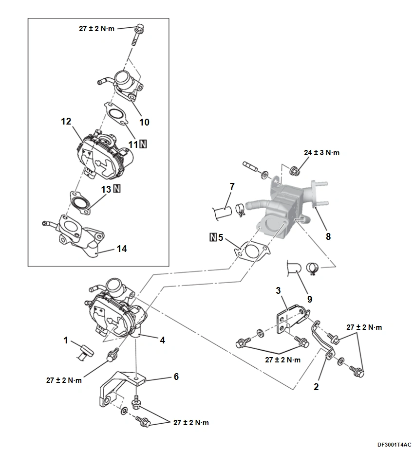
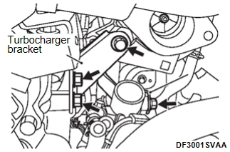
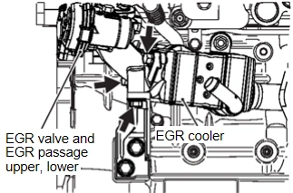
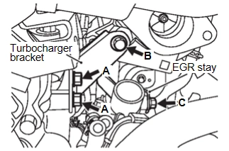

引擎<4B4> - 引擎與排放控制 - 排放控制 - 廢氣再循環 (EGR) 系統
EGR 冷卻器拆卸與安裝
N5024801O0000700ENG
拆卸前與安裝後作動
前艙飾板拆卸與安裝 (請參閱駕駛操作 - 雨刷與清洗裝置 - 拆卸與安裝 - 前雨刷
拆卸與安裝
)
鈑金頂蓋拆卸與安裝 (請參閱車身、車門、車頂與車輛防盜 - 車身外觀 - 拆卸與安裝 - 鈑金頂蓋
拆卸與安裝
)
電瓶托架拆卸與安裝 (請參閱電氣與電源控制 - 電源供應、搭鐵與電路元件 - 拆卸與安裝 - 電瓶托架
拆卸與安裝
)
煞車油液位開關接頭拆卸與安裝 (請參閱煞車 - 煞車系統 - 拆卸與安裝 - 煞車總泵
拆卸與安裝
)
空氣流量感知器接頭拆卸與安裝 (請參閱引擎 <4B4> - 進排氣 - 空氣濾清器
空氣濾清器拆卸與安裝
)
空氣濾清器蓋、進氣軟管及空氣導管軟管拆卸與安裝 (請參閱引擎 <4B4> - 進排氣 - 空氣濾清器
空氣濾清器拆卸與安裝
)
進氣接頭拆卸與安裝 (請參閱引擎 <4B4> - 進排氣 - 渦輪增壓器總成
渦輪增壓器總成拆卸與安裝
)
前段三元催化器拆卸與安裝 (請參閱引擎 <4B4> - 進排氣 - 三元催化器拆卸與安裝
三元催化器拆卸與安裝
<2WD>,
三元催化器拆卸與安裝
<4WD>)
EGR 軟管拆卸與安裝 (請參閱
EGR 閥拆卸與安裝
)
排氣溫度感知器拆卸與安裝 (請參閱
排氣溫度感知器拆卸與安裝
)

拆卸步驟
1.
EGR 閥連接
<<A>>
>>A<<
2.
渦輪增壓器支架
<<A>>
>>A<<
3.
EGR 閥固定架
<<B>>
>>A<<
4.
EGR 閥與 EGR 通道上、下部總成
>>A<<
5.
EGR 濾清器墊片
>>A<<
6.
EGR 閥支架
7.
水管 T
>>A<<
8.
EGR 冷卻器
9.
水管 V
10.
EGR 閥通道上部
11.
EGR 閥墊片
12.
EGR 閥
13.
EGR 閥墊片
14.
EGR 閥通道下部
拆卸要點
<<A>> 渦輪增壓器支架 / EGR 閥固定架拆卸
拆下渦輪增壓器支架及 EGR 閥固定架的四支固定螺栓。然後取下相互組裝在一起的渦輪增壓器支架及 EGR 閥固定架。

<<B>> EGR 閥與 EGR 通道上、下部總成拆卸
拆下 EGR 閥與 EGR 通道上、下部總成固定螺栓。

注意：
拔出 EGR 閥與 EGR 通道上、下部總成固定螺栓時，務必確認 EGR 濾清器墊片不會脫落。
安裝維修要點
>>A<< EGR 冷卻器 / EGR 閥支架 / EGR 濾清器墊片 / EGR 閥與 EGR 通道上、下部總成 / EGR 閥固定架 / 渦輪增壓器支架安裝
暫時鎖緊 EGR 冷卻器固定螺帽至汽缸蓋。
暫時鎖緊 EGR 閥支架固定螺栓至汽缸蓋。
暫時鎖緊 EGR 閥與 EGR 通道上、下部總成固定螺栓至 EGR 冷卻器
注意：
注意勿使 EGR 濾清器墊片偏離其位置。
暫時鎖緊 EGR 閥支架固定螺栓至 EGR 閥與 EGR 通道上、下部總成
將 EGR 固定架安裝於渦輪增壓器支架上。
暫時鎖緊已組裝的 EGR 固定架與渦輪增壓器支架四支固定螺栓。
A: M8 x 20 法蘭螺栓 (汽缸蓋)
B: M8 x 20 法蘭螺栓 + 墊圈 (渦輪增壓器支架)
C: 8 x 16 法蘭螺栓 (EGR 閥與 EGR 通道上、下部總成)
注意：
檢查 EGR 閥固定架是否與 EGR 通道上部緊密接觸。

將 EGR 閥支架固定螺栓（汽缸蓋側）鎖緊至規定扭力。
鎖緊扭力: 27 ± 2 N·m
將 EGR 閥與 EGR 通道上、下部總成固定螺帽鎖緊至規定扭力。
鎖緊扭力: 27 ± 2 N·m
將 EGR 冷卻器固定螺帽鎖緊至規定扭力。
鎖緊扭力: 24 ± 3 N·m
將 EGR 閥支架固定螺栓（EGR 閥與 EGR 通道上、下部總成側）鎖緊至規定扭力。
鎖緊扭力: 27 ± 2 N·m
將 EGR 固定架與渦輪增壓器支架固定螺栓鎖緊至規定扭力。
鎖緊扭力: 27 ± 2 N·m
已加入書籤
書籤數量過多。
請刪除後重新加入書籤。
×
){kind=link}
){kind=link}
){kind=link}
){kind=link}